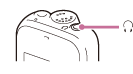
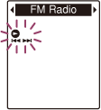
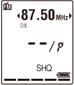

IC RecorderICD-PX333/PX333F
Tuning in an FM radio station manually (manual scanning) (ICD-PX333F only)
The headphone cord of headphones is an FM antenna, therefore, connect headphones to the (headphone) jack when listening to the FM radio.

Note
- During FM reception, the DPC function and noise cut function do not work.
- In the stop mode, select DISP/MENU - “FM Radio,” and then press
 PLAY/STOP・ENTER.
PLAY/STOP・ENTER.

The IC recorder enters the FM radio mode.
- Press DISP/MENU briefly to move the cursors (, ) to both sides of the
frequency display on the upper line in the
display window.

The IC recorder is now ready for tuning in a station by scanning frequencies.
- Press –
 or
or  + repeatedly to tune in a station.
+ repeatedly to tune in a station. - Press
 (stop) to turn the FM radio off.
(stop) to turn the FM radio off.